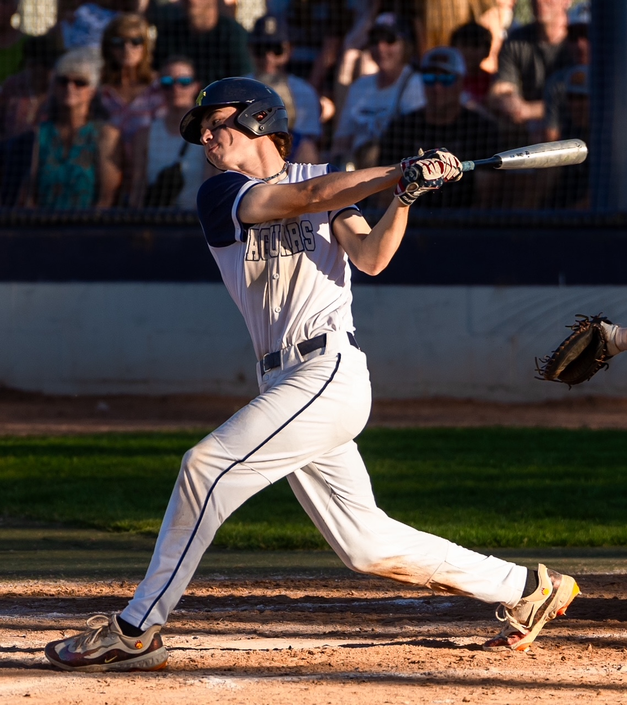

William Jared Balcom was born on March 25th, 2007 in Richland, Washington. He grew up in Pasco, Washington with his older sister McKaila and attended Tri-Cities Prep High School. He will graduate top 5 in his class in 2025 and is contemplating his college choice.
Will is a mutli-sport athlete, playing basketball and baseball for all 4 years of his high school career. He is also on the Tri-Cities Prep ASB council and has been accepted to a variety of well-respected colleges, including acceptance into Cal-Poly's agribusiness college, University of Washington's school of engineering, and Gonzaga University. He is currently considering California Polytechnic University, University of Washington, and a scholarship to play baseball at Whitman College.
Will has played baseball for most of his life, playing t-ball at age 3, little league growing up, and became a varsity player his freshman year of high school. He currently plays for the club team Reign, where he is has played multiple postitons, including first base, third base, outfield and pitcher. His scouting report can be found here. He has won two state titles for his high school team and is hoping for a third this season.